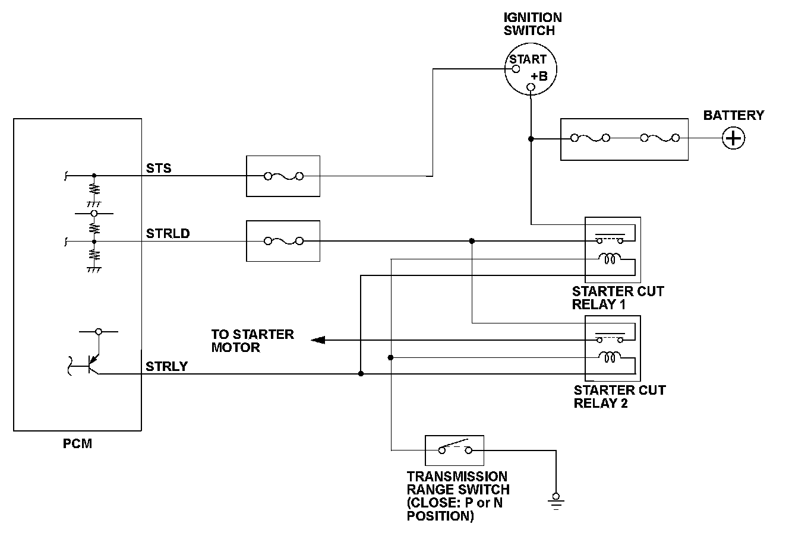

Advanced Diagnostics
DTC P16BF: Starter Cut Relay STRLY Circuit Malfunction
General Description
The powertrain control module (PCM) compares the signal of the drive command to the starter and the return signal from the starter cut relay. When the signal of the drive command to the starter and the return signal from the starter cut relay do not coincide for a set time or more, the PCM detects a malfunction and a DTC is stored.
Monitor Execution, Sequence, Duration, DTC Type, OBD Status
Enable Conditions
Malfunction Threshold
The signal of the drive command from the PCM to the starter and the return signal from the starter cut relay do not coincide for at least 5 seconds.
Diagnosis Details
Conditions for illuminating the indicator
When a malfunction is detected, the DTC and the freeze frame data are stored in the PCM memory. The MIL does not come on.
Conditions for clearing the DTC
The DTC and the freeze frame data can be cleared by using the scan tool Clear command or by disconnecting the battery.